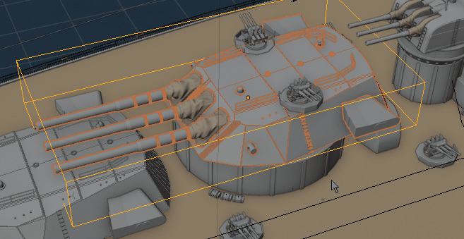
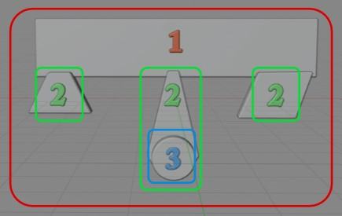
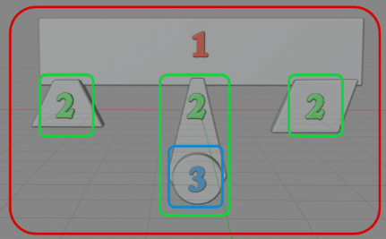
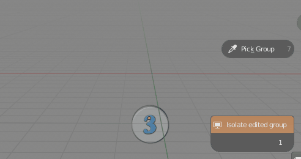
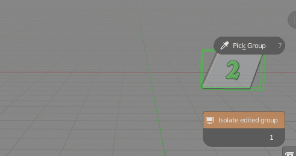

Managing group visibility¶
When you edit group you can isolate it using 'Isolate Edited Group' button. This will hide all objects except the ones that are in edited group. 'Isolate' feature uses Blender Local View

Hiding all objects except the ones that are in edited groupIn the addon preferences - View tab there is option for two modes if isolating edited groups.
Isolate view mode:
- History - Use edition history list for isolation of edited group objects,
- Collection depth - Use collection nesting depth for isolation of edited objects
Lets say we have group, made from four nested subgroups (three at second level plus one at third level) like on image below:

Number describes the depth of nesting of subgroupsWe open groups in following order:

Changing visibility depth value, when using Collection depth setting:

Edited Groups are revealed depending on theirs nesting depthChanging visibility depth value, when using History depth setting:

Groups are revealed in reverse order of opening them